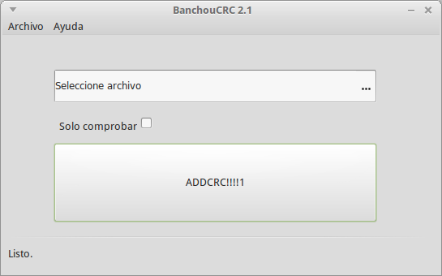
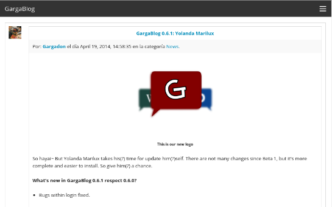

BanchouCRC
Download Go to BanchouCRC homepage
A simple GUI for CRC32 written in Gambas3.

BanchouPatcher
Download Go to BanchouPatcher homepage
A simple GUI for make file patches using XDelta3 written in Gambas3.
GargaBlog
Download Go to GargaBlog homepage
Really? Another blog CMS? It wouldn't be WordPress, it only makes his work: Build a simple PHP blog.

Donate
What's this?
Maybe you're asking a BIG question: What the hell is this page? Well, it's too complicated to explain, but in simple words this is my homepage for all my projects.
Which projects?
All my projects are simple scripts made in my free time, just for fun and for discover new languages, like Gambas3 or PHP. But not only are made for fun. These scripts simplify my daily activities in Linux environments, like make patches or calculating CRC32 checksum of a file.
Hey! I like your scripts. How can I contribute to you or your projects?
You have many forms to contribute to my projects. Since reporting bugs, requesting features, making changes, or donating, every contribution is welcome.